FEDERAL REPUBLIC OF NIGERIA
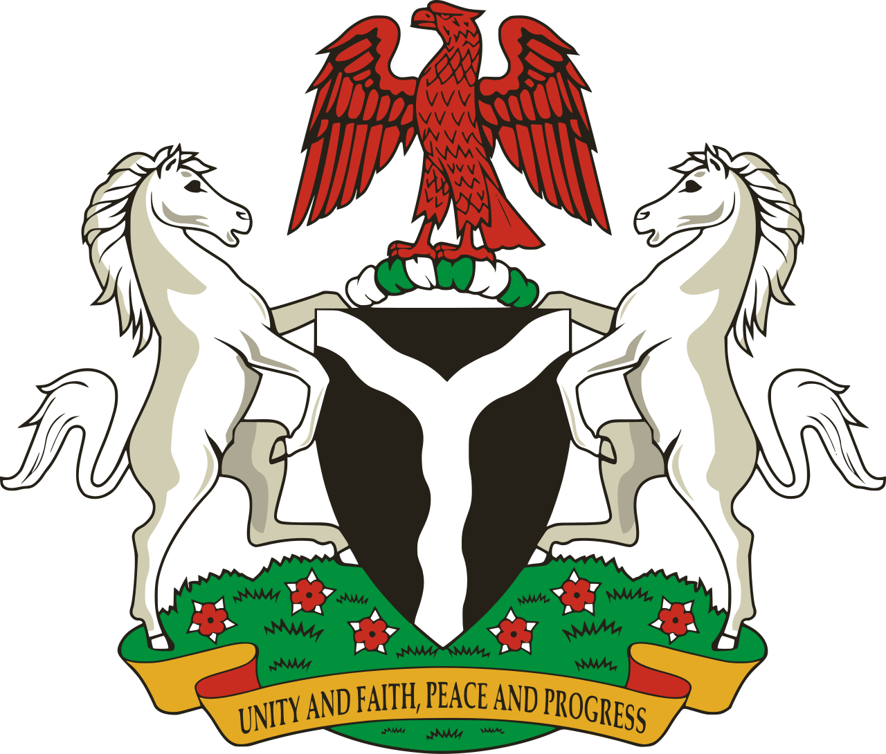
"Unity and Faith, Peace and Progress"
First Nigerian Republic (1963–1966)
FIRST PRESIDENT

- Mnamdi Benjamin Azikiwe
- Political Party: N.C.N.C.
- In Office From: 1 October 1963.
- In Office until: 16 January 1966 [Diposed].
- Born: 16 November 1904.
- Died: 11 May 1996.
- Aged: 91 Years Old.
Military Government (1966–1979)
SECOND PRESIDENT
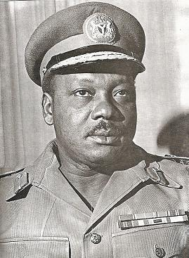

- Johnson Aguiyi-lronsi
- Political Party: Military
- In Office From: 16 January 1966.
- In Office Until: 29 July 1966 [Deposed].
- Born: 3 March 1924.
- Died: 29 July 1966 [Assassinated].
- Aged: 42 Years Old.
THIRD PRESIDENT
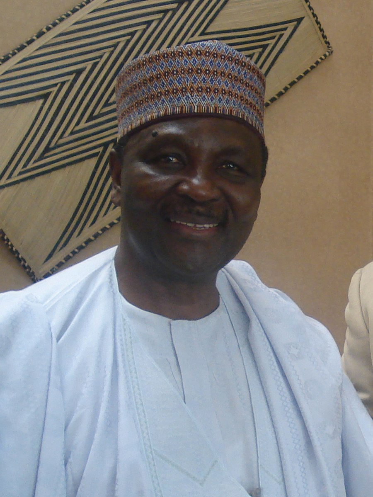
- Yakubu Gowon.
- Political Party: Military
- In Office From: 1 August 1966.
- In Office Until: 29 January 1975 [Deposed].
- Born: 19 October 1934.
- Died: 19 August 2008.
- Aged: 88 Years Old.
FOURTH PRESIDENT
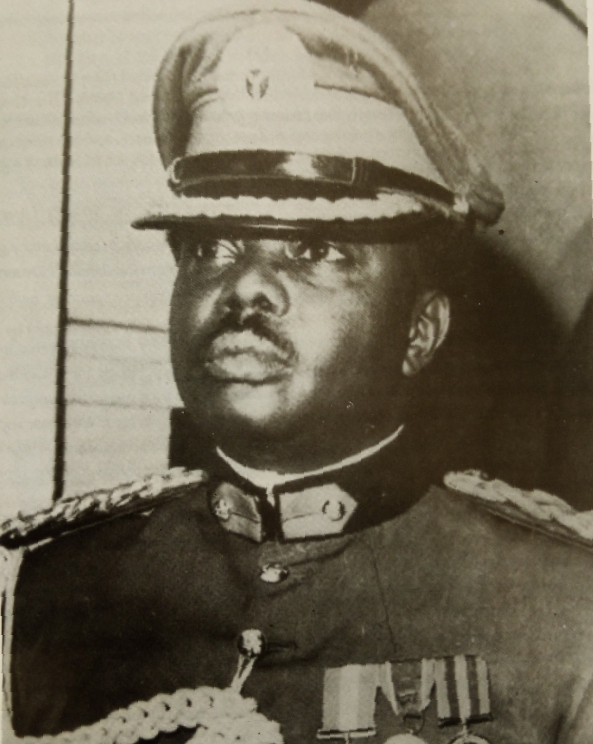
- Murtala Muhammed.
- Political Party: Military
- In Office From: 29 January 1975.
- In Office Until: 13 February 1976 [Deposed].
- Born: 8 November 1938.
- Died: 13 February 1976 [Assassinated].
- Aged: 37 Years Old.
FIFTH PRESIDENT
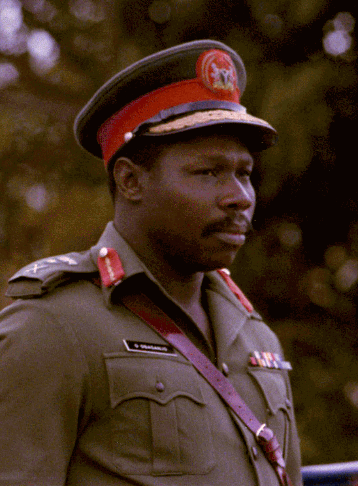
- Olusegun Obasanjo
- Political Party: Military
- In Office From: 13 February 1976.
- In Office Until: 1 October 1979 [Resigned].
- Born: 5 March 1937.
- Aged: 86 Years Old.
Second Nigerian Republic (1979–1983)
SIXTH PRESIDENT
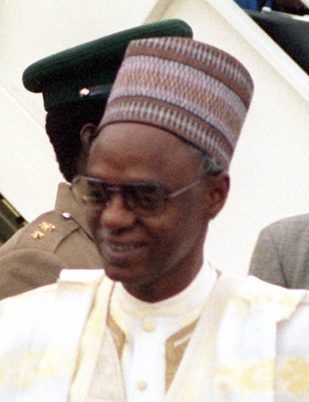
- Alhaji Shehu Shagari
- Political Party: N.P.N.
- In Office From: 1 October 1979.
- In Office Until: 31 December 1983 [Deposed]
- Born: 35 February 1925.
- Died: 28 December 2018.
- Aged: 93 Years Old.
Military Government (1983–1993)
SEVETH PRESIDENT
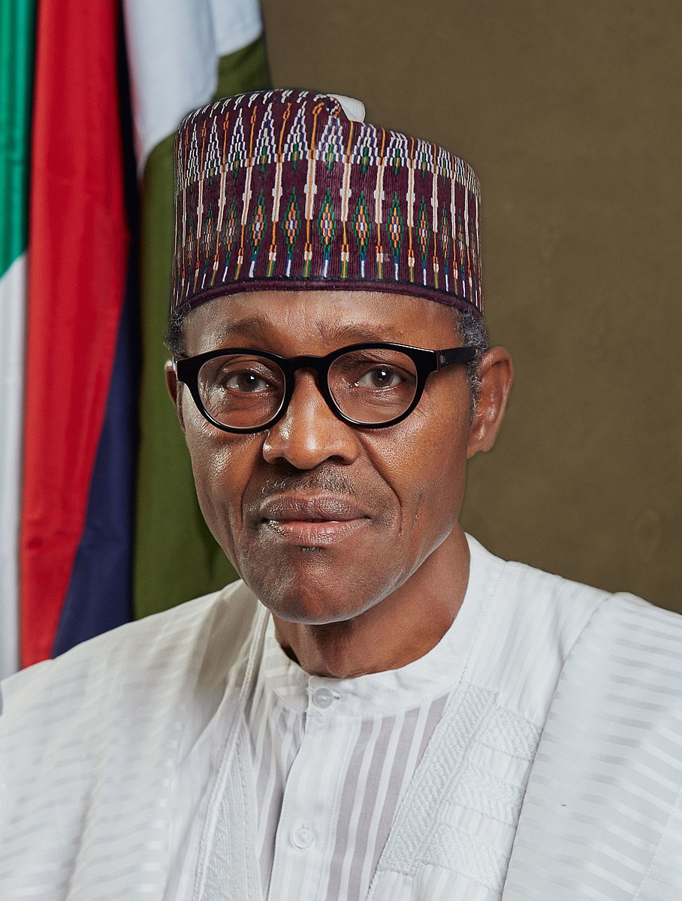
Military Head of State of Nigeria
- Muhammadu Buhari.
- Political Party: Military
- In Office From: 31 December 1983.
- In Office Until: 27 August 1985 [Deposed].
- Born: 17 December 1942.
- Aged: 80 Years Old.
EIGHTH PRESIDENT
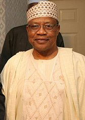

Military President of Nigeria
- Ibrahim Babangida
- Political Party: Military; P.D.P.
- In Office From: 27 August 1985.
- In Office Until: 26 August 1993 [Resigned].
- Born: 17 August 1941.
- Aged: 82 Years Old.
Interim National Government (1993)
NINETH PRESIDENT
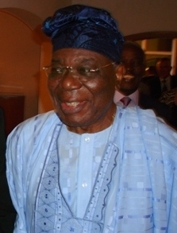
Interim President
- Enerst Shonekan
- Political Party: Independent
- In Office From: 26 August 1993.
- In Office until: 17 November 1993 [Deposed].
- Born: 9 May 1936.
- Died: 11 January 2022.
- Aged: 85 Years Old.
Military Government (1993–1999)
TENTH PRESIDENT
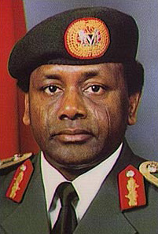
Military Head of State of Nigeria
- Sani Abacha
- Political Party: Military
- In Office From: 17 November 1993.
- In Office Until: 8 June 1998.
- Born: 20 September 1943.
- Died: 8 June 1998 [In Office].
- Aged: 54 Years Old.
ELEVETH PRESIDENT
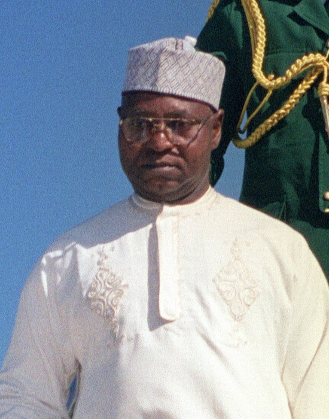
- Abdulsalami Abubakar.
- Political Party: Military
- In Office From: 9 June 1998.
- In Office Until: 29 May 1999.
- Born: 13 June.1942.
- Aged: 81 Years Old.
Fourth Republic (1999–present)
TWELVETH PRESIDENT
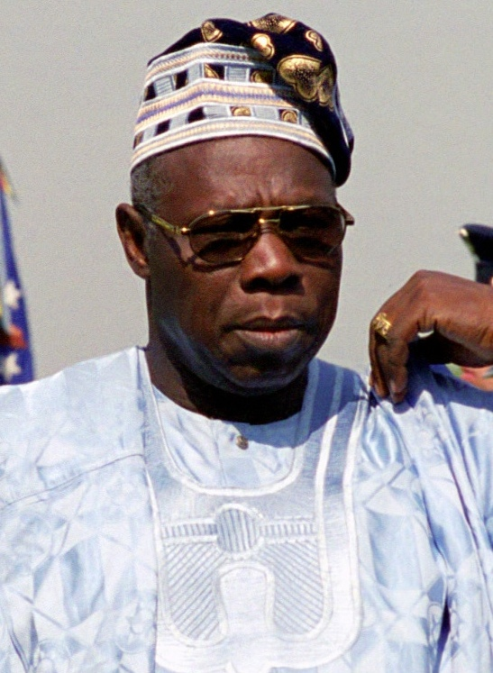
- Olusegun Obasanjo.
- Political Party: P.D.P.
- In Office From: 29 May 1999.
- In Office Until: 29 May 2007.
- Born: 5 March 1937.
- Aged: 86 Years Old.
THIRTETH PRESIDENT
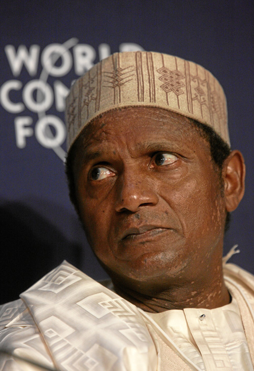
- Umaru Musa Yar'Adua
- Political Party: P.D.P.
- In Office From: 29 May 2007.
- In Office Until: 5 May 2010.
- Born: 16 August 1951.
- Died: 5 May 2010 [ln Office].
- Aged: 58 Years Old.
FOURTETH PRESIDENT
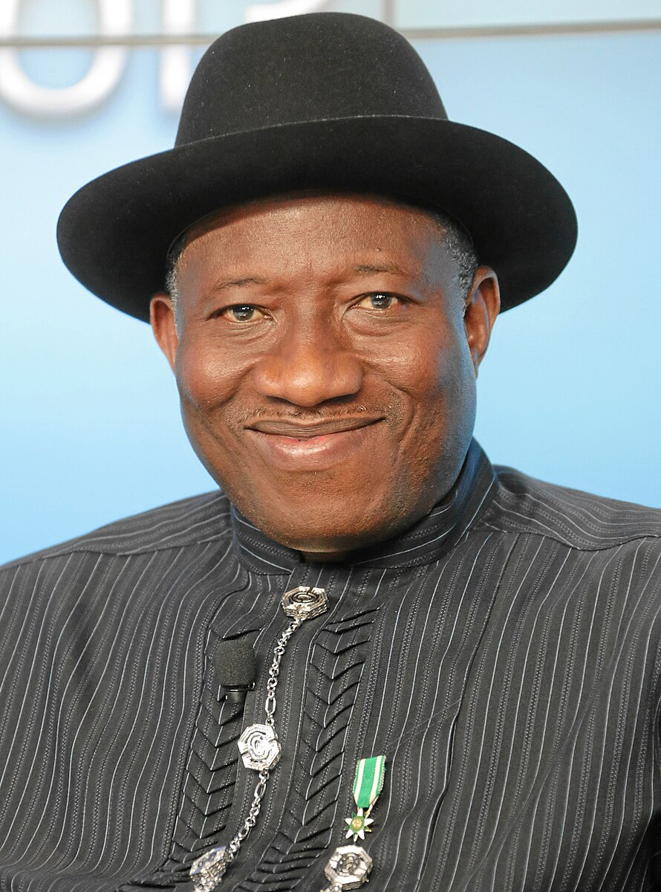
- Goodluck Jonathan
- Political Party: P.D.P.
- In Office From: 6 May 2010.
- In Office Until: 29 May 2015
- Born: 20 Movember 1957.
- Aged: 65 Years Old.
FIFTETH PRESIDENT

- Muhammadu Buhari.
- Political Party: A.P.C.
- In Office From: 29 May 2015.
- In Office Until: 29 May 2023.
- Born: 17 December 1942.
- Aged: 80 Years Old.
SIXTETH PRESIDENT
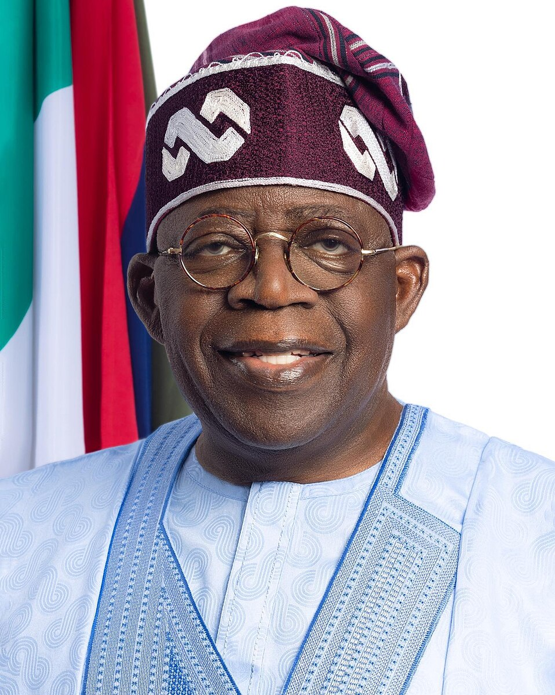
Incumbent President
- Bola Tinubu
- Political Party: A.P.C
- In Office From: 29 May 2023.
- Born: 29 March 2952.
- Aged: 71 Years Old.